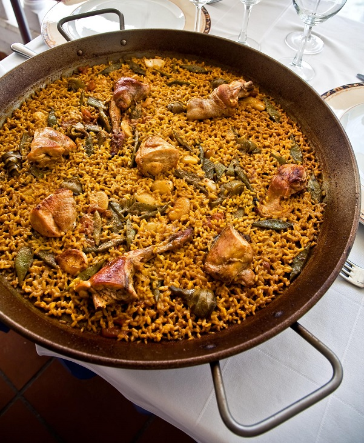

<!DOCTYPE html>
<html lang="en">
<head>
    <meta charset="UTF-8">
    <meta name="viewport" content="width=device-width, initial-scale=1.0">
    <title>Document</title>
</head>
<body>
    
    </html><h1>Paella Valenciana</p>

        
        <figcaption>The authentic Valencian paella only has a few ingredients.</figcaption>

        <h3>Ingredients</h3>
        <ul>
            <li>Spanish Bomba Rice</li>
            <li>Azafran</li>
            <li>Chicken broth</li>
            <li>Chicken and rabbit</li>
            <li>Green beans</li>
        </ul>
        
        <h3>How to do it!</h3>
        
        <ol>
            <li>Heat a paella pan over medium-high heat, and coat with olive oil. Add chicken, rabbit, and garlic; cook and stir until nicely browned. Move the browned meat to the sides of the pan, and add tomato, butter beans, peas, and green beans. Season with paprika, and mix well.
            </li>
            <li>Fill the paella pan almost to the top with water, measuring the water as you add it so you can determine the amount of rice to add later. Bring to a boil. Simmer for about 1 hour to make a nice broth.
            </li>
            <li>Season with a generous amount of salt, just enough saffron for a yellow color, thyme, and rosemary. Stir in half as much rice as the amount of water added to the pan. Cover, reduce heat to low, and simmer until all of the liquid has been absorbed, about 20 minutes.
            </li>

        </ol>

        

    </body>
